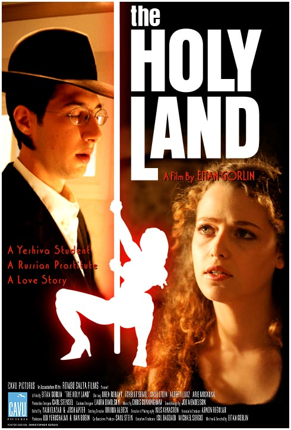

| |
|
|
23. Jänner 2006
"The Holy Land" (Israel 2001)
 Eine moderne Entwicklungsgeschichte im heiligen Land, dem heutigen Israel. Der junger Sohn eines streng-orthodoxen Rabbis verliebt sich in eine junge rothaarige Prostituierte aus der Ukraine: "I hope the Jews and Arabs kill each other until there is nobody left". Vom sprühenden Leben Tel-Aviv's geht es ins weit entfernte Jerusalem, das von der Welt seiner behüteten Kindheit und Elterngeneration in etwa so weit entfernt ist, wie New York vom der Rest der Staaten. Mitten im arabischem Gebiet, mit jeden Mengen versprengten Ausländern und Einwanderern. Und sogar für den typischen Amerikaner ist die Aussicht auf Zivilisten, die mit geschulterten AR-15 und AR-16 herumrennen, etwas befremdlich. "You don't have to be crazy to live here - but it helps!"
Ebenso wie in "The Girl in the
Cafe" wird eine Liebesgeschichte als Aufhänger für den
spannenden politischen Hintergrund gewählt. Allerdings als
Entwicklungsgeschichte, das Erwachen und Erwachsenwerden in
einer fremden seltsamen Welt. So läßt sich die aktuelle
Situation am besten nach USA und Europa
transportieren. "Holy Land" ist bis auf "Or" (Cannes 2004)
und "Va, vis et deviens" (aktuell im KIZ) der einzige
authentische israelisch-jüdische Film aus Israel, den ich in
den letzten Jahren gesehen habe. Die Filme des am
Filmfestival in Venedig umtriebigen Amos Gitai bleiben uns
zum Glück erspart. Bemerkenswert ist auch, daß aus der
selben Zeit, an denen die meisten aktuellen isrealischen Spielfilme
gedreht werden konnten, der kurzen Intifada Pause im Jahr
2001 bis Ariel Sharon auf den Tempelberg stieg, fast alle in
Europa verliehenen Filme palästinensische Filme waren:
"Paradise Now", "Divine Intervention", "Die Syrische Braut"
(ok, nicht ganz. Der war arabisch-drusisch), und der Rest
behandelt schwule Themen. Die New-Yorker Produzentin
versicherte mir, daß israelische Filme üblicherweise nicht
nach Deutschland und Österreich verliehen werden können.
--Reini Urban
Set in the world's holiest city during the dawn of the new century as fanatical Christians from across the globe arrive in hopes of provoking a confrontation between the many extremist Arabs and Jews, the plot of "The Holy Land" focuses on Menachem Weinbaum ("Mendy"), a young rabbinical student who is restless to learn about the bigger world. On the advice of his slightly demented teacher, Mendy visits a brothel in Tel Aviv so he can be rid of his "madness" and return to his studies. There he meets Sasha, a nineteen-year-old Russian prostitute, whose dire situation and immense beauty captivates him.
But Mendy's world really opens up when he discovers Mike's
Place, a real-life magnet for the lost souls who flock to Jerusalem. A
place where Arabs, Christians and Jews drink side by side, Mike's Place
introduces Mendy to a gun-toting American-born settler, a shady
entrepreneurial Arab and a slew of American expatriates, forever
changed by the sixties, who act out biblical roles. As Mendy becomes
more immersed in this culture of the millennium he begins to wonder if
Mike and his band of misfits are as harmless as they seem? Or are they
intent on provoking Armageddon? A story of doomed, passionate love and
coming of age in troubled times - set in a world-famous place not
unlike Rick's Cafe American or the Cantina in "Star Wars" - "The Holy Land" explores the
underbelly of real life in Jerusalem after the sun goes down and the
tourists and Orthodox families go to sleep.
This film contains some strong language, nudity and sex scenes.
B+R: Eitan Gorlin, D: Oren Rehany, Tchelet Semel.
102min, eng.OF, Ö Premiere
19:30 Uhr, Space04 Kunsthaus Graz, € 5.-